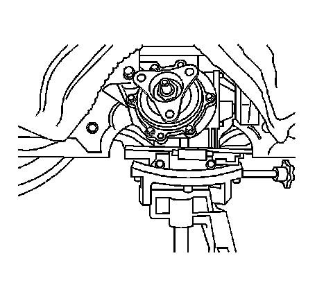
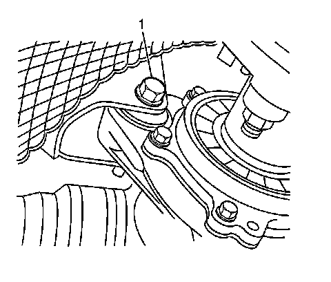
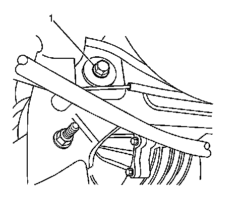
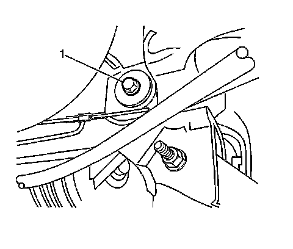
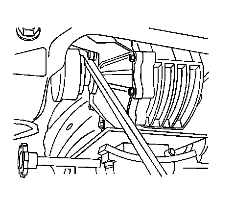
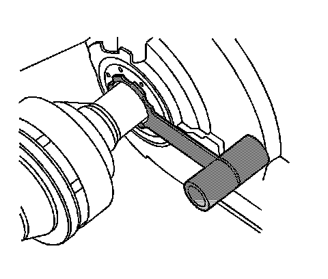
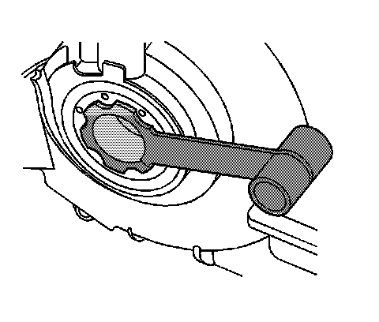
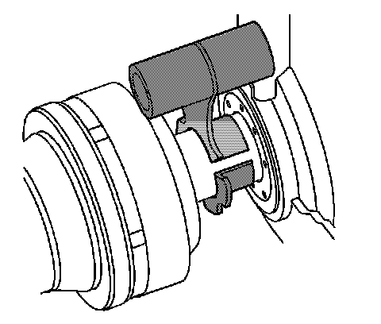
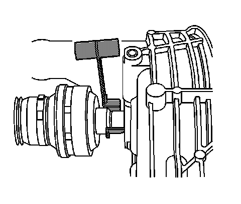

Differential Replacement
Differential Replacement
Tools Required
J 44394 Seal Protector
Removal Procedure
1. Raise and support the vehicle. Refer to Lifting and Jacking the Vehicle (Service and Repair) .
2. Remove propeller shaft. Refer to Rear Propeller Shaft Replacement (RWD) (Rear Propeller Shaft Replacement (RWD)) .
3. Remove the right rear tire and wheel assembly. Refer to Tire and Wheel Removal and Installation (Service and Repair) .
4. Remove the right wheel drive shaft. Refer to Rear Wheel Drive Shaft Replacement (Rear Wheel Drive Shaft Replacement) .

5. Position a transmission jack beneath the differential.
6. Firmly secure the differential to the transmission jack.

7. Remove the front differential to support mounting bolt (1) and nut.

8. Remove the left rear differential to support mounting bolt (1).
Note that the rear differential support mounting bolts will not be able to be removed completely due to interference with the underbody.

9. Remove the right rear differential to support mounting bolt (1).
10. Lower the jack slightly until the mounting ear at the front of the differential clears the support attachment point.

11. Using a suitable tool, carefully release the wheel drive shaft from the differential enough to install the J 44394 .

Notice: J-44394 must be installed into the differential output shaft seal prior to removing and installing the wheel drive shaft. Failure to install J-44394 as indicated may cause the splines of the wheel drive shaft to cut the differential output seal.
12. Carefully install J 44394 the over the wheel drive shaft.
13. Carefully slide the J 44394 into the differential output shaft seal.
14. Continue lowering the jack, while simultaneously disengaging the left wheel drive shaft.
15. Remove the differential from the vehicle.
Installation Procedure
Important: The differential is shipped with a plastic vent plug. Remove the plastic vent plug prior to differential vent installation.
1. When replacing the differential, remove the plastic vent plug and install a new differential vent.
The vent flange must be fully seated.
2. If reusing the wheel drive shaft remove and discard the wheel drive shaft retaining ring. The wheel drive shaft retaining ring is on the splined shaft of the inner tripod housing.
3. Install the new wheel drive shaft retaining ring. The wheel drive shaft retaining ring is on the splined shaft of the inner tripod housing.

Notice: J-44394 must be installed into the differential output shaft seal prior to removing and installing the wheel drive shaft. Failure to install J-44394 as indicated may cause the splines of the wheel drive shaft to cut the differential output seal.
4. If previously removed carefully install J 44394 into the left differential output shaft seal.
Important: In order to prevent lubricant leaks, use care when installing the wheel drive shaft to the differential. Do not damage the oil seal. Replace the oil seal if it becomes nicked, distorted, or is otherwise damaged.

5. With the differential firmly attached to the jack, raise the differential while carefully installing the left wheel drive shaft into the differential until the splines are past the J 44394 .
6. Carefully remove the J 44394 from the differential.

7. Carefully remove J 44394 from the left wheel drive shaft.
8. Carefully install the wheel drive shaft into the differential until the retaining ring is engaged.
9. Ensure the wheel drive shaft retaining ring is fully engaged to the differential by grasping the inner housing and pulling outward. The wheel drive shaft will stay positively engaged if properly installed to the differential.
10. Install the front differential to support mounting bolt (1) in order to locate the differential to the rear support.
11. Hand install the nut to the bolt.
12. With the differential firmly attached to the jack, raise the differential to the rear support.
13. Position the differential to the support.
14. Hand install the left rear differential to support mounting bolt (1).
Notice: Refer to Fastener Notice (Fastener Notice) .
15. Hand install the right rear differential-to-support mounting bolt (1).
* Tighten the rear differential-to-support mounting bolts to 175 N.m (129 lb ft).
* Tighten the front differential-to-support mounting bolt 175 N.m (129 lb ft).
16. Remove the transmission jack.
17. Install propeller shaft. Refer to Rear Propeller Shaft Replacement (RWD) (Rear Propeller Shaft Replacement (RWD)) .
18. Install the right wheel drive shaft. Refer to Rear Wheel Drive Shaft Replacement (Rear Wheel Drive Shaft Replacement) .
19. Install the right rear tire and wheel assembly. Refer to Tire and Wheel Removal and Installation (Service and Repair) .
20. Inspect the differential lubricant level. Refer to Rear Axle Lubricant Level Inspection (Rear Drive Axle) .
21. Lower the vehicle.